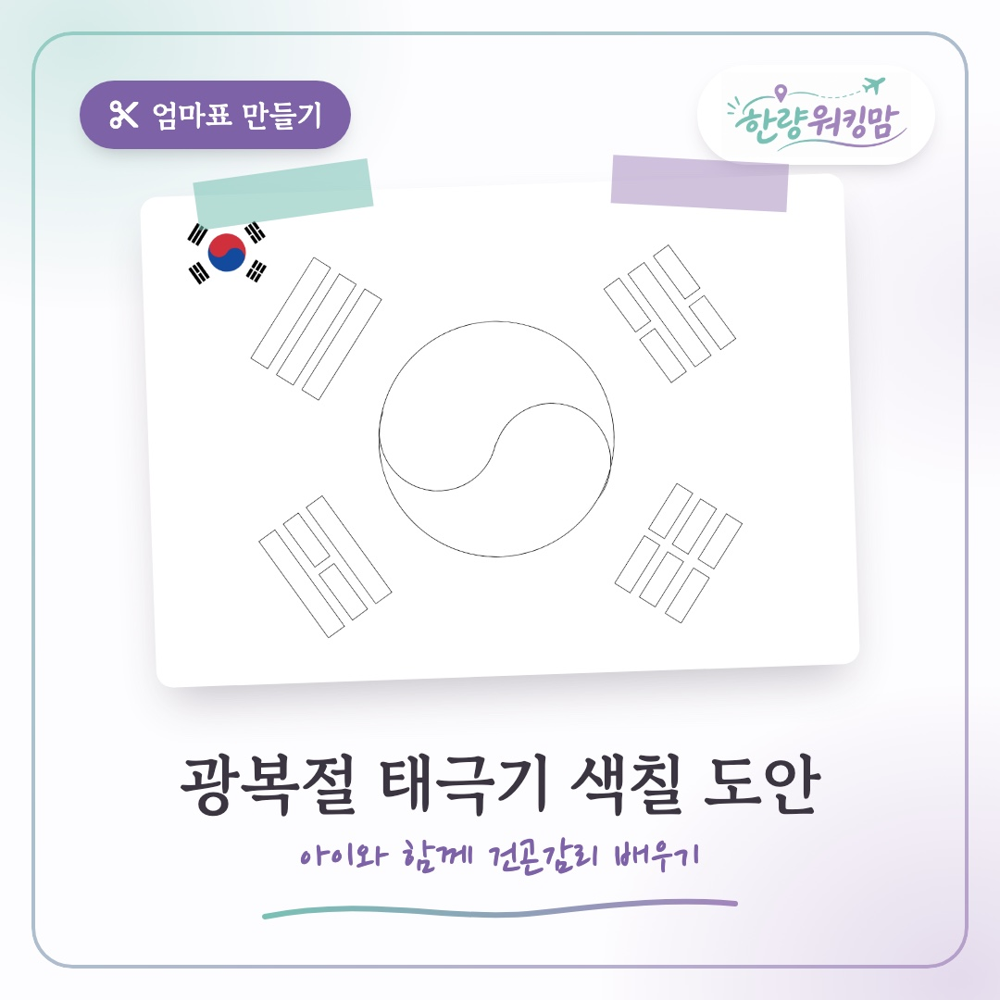
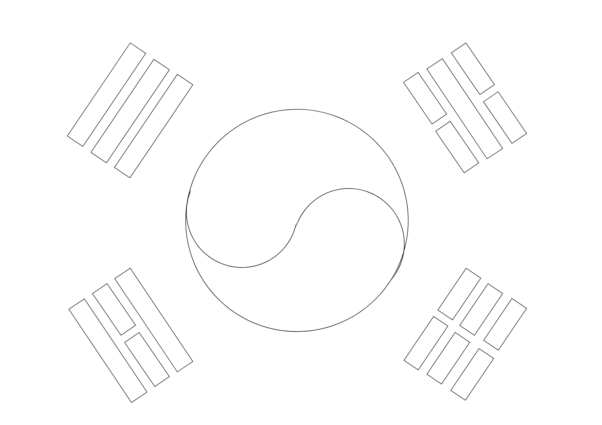
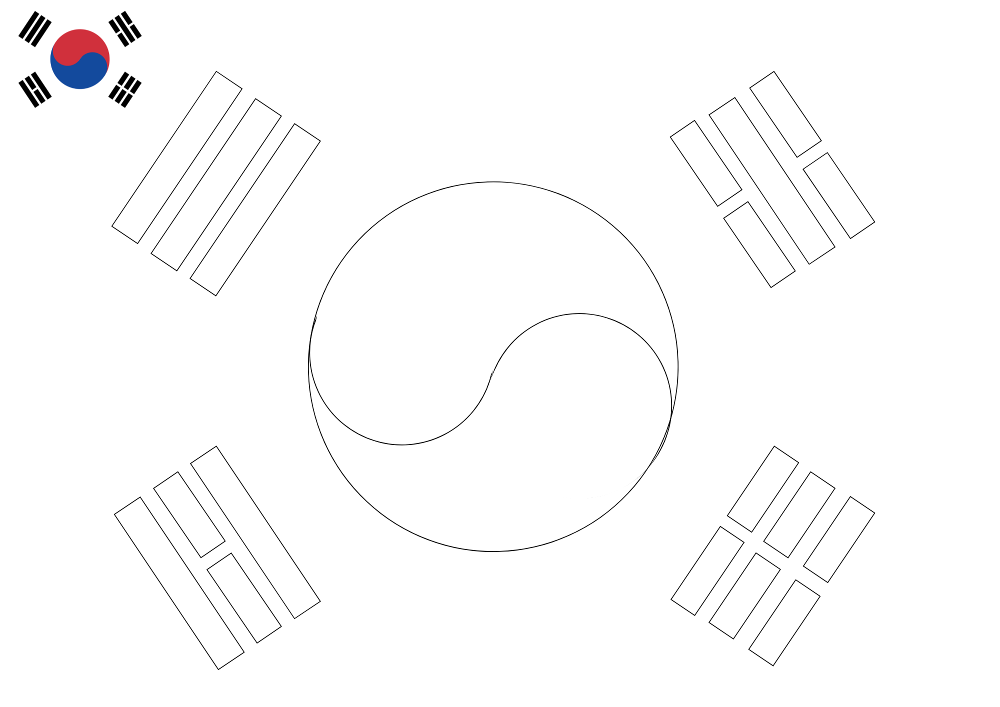

광복절 태극기 색칠 도안
8월 15일 광복절을 맞아 아이와 함께 태극기를 색칠하며 건곤감리의 의미를 이야기해 봐요. 놀이도 하고, 우리 역사도 자연스럽게 알려줄 수 있어요.
- 난이도
- ★☆☆
- 도안
- 2종
- 추천 나이
- 24개월~


A4 용지에 가로 방향으로 출력해 주세요
description도안 미리보기


inventory_2준비물
- 출력한 태극기 도안 (A4)
- 색연필이나 크레파스
- 꼭 필요한 색: 빨강 · 파랑 · 검정
아이와 나눌 이야기
- 광복절이란?
- 1945년 8월 15일, 일본의 지배에서 벗어나 우리나라가 다시 주권을 되찾은 날이에요.
- 하얀 바탕
- 우리 민족의 순수함과 평화
- 태극 문양
- 우주의 조화 — 빨강은 양(陽), 파랑은 음(陰)
- 건곤감리
- 건 ☰ 하늘 · 곤 ☷ 땅 · 감 ☵ 물 · 리 ☲ 불
format_list_numbered만드는 방법
-
1
도안 내려받아 출력하기
위의 버튼으로 도안을 내려받아 A4 가로로 출력해요. 처음이라면 왼쪽 위에 작은 태극기가 있는 ② 색 견본 도안이 따라 칠하기 쉬워요.
-
2
태극기 이야기 나누기
색칠하기 전에 광복절이 어떤 날인지, 태극기의 하얀 바탕과 태극 문양, 네 모서리 괘가 무엇을 뜻하는지 아이 눈높이로 들려줘요.
-
3
태극 문양 칠하기
가운데 동그라미의 위쪽은 빨강, 아래쪽은 파랑으로 칠해요.
-
4
건곤감리 칠하기
네 모서리의 막대(괘)를 검정으로 칠해요. 하나씩 칠하면서 "이건 하늘, 이건 땅" 하고 이름을 불러 주면 더 오래 기억해요.
-
5
완성!
다 칠한 태극기는 광복절에 창문이나 벽에 붙여 두어요. 아직 어린 아이라면 색을 맞추지 않고 자유롭게 색칠해도 충분해요.
엄마의 한 마디
23개월 쌍둥이 남매에게는 아직 색칠하기, 그림 그리기가 전부지만 이렇게 하나씩 재미있게 알려주고 싶었어요. 어릴 때부터 제대로 알아야 커서도 우리 역사를 제대로 알 것 같아서요. 다른 아이들도 함께하면 좋겠어서 도안을 무료로 나눠요 :)
가정·교실에서 자유롭게 써 주세요. 출처 없이 재가공하거나 무단 배포하는 것은 금지예요. 블로그 원문 보기open_in_new